1.5. 随机梯度下降法(SGD)¶
随机梯度下降 (SGD) 是一个简单但非常高效的方法，用于在凸损失函数 (比如线性 SVMs 和 Logistic Regression )下的线性分类器的判别学习。 尽管SGD已经出现在机器学习算法中很长时间了，但是由于其在大规模学习中的出色表现直到 最近才获得了相当大的关注。
SGD已经被成功应用于大规模的和稀疏的机器学习任务中，比如文本分类以及自然语言处理等领域。 由于数据的稀疏性，在此模块中的分类器们能够轻松应对超过10^5的训练样本和超过10^5的特征个数。
随机梯度下降SGD的优点:
- 高效率.
- 实现简单(lots of opportunities for code tuning).
随机梯度下降SGD的缺点:
- SGD需要一些超参数比如正则化参数以及迭代次数。
- SGD对特征规模的变化比较敏感.
1.5.1. 分类¶
警告
务必要在拟合模型前将你的训练数据随机重排列；或者使用
shuffle=True
在每次迭代完毕后都重新洗牌.
SGDClassifier
类实现了一个用于分类的简单的随机梯度下降学习过程并且支持不同类型的损失函数和正则化罚函数。
像其他分类器一样，SGD也必须用两个输入数组进行拟合：数组 X of size [n_samples, n_features] 存储训练样本, 数组 Y of size [n_samples] 存储目标变量(每个训练样本的类标签):
>>> from sklearn.linear_model import SGDClassifier
>>> X = [[0., 0.], [1., 1.]]
>>> y = [0, 1]
>>> clf = SGDClassifier(loss="hinge", penalty="l2")
>>> clf.fit(X, y)
SGDClassifier(alpha=0.0001, average=False, class_weight=None, epsilon=0.1,
eta0=0.0, fit_intercept=True, l1_ratio=0.15,
learning_rate='optimal', loss='hinge', n_iter=5, n_jobs=1,
penalty='l2', power_t=0.5, random_state=None, shuffle=True,
verbose=0, warm_start=False)
当模型拟合好以后，就可以用于预测新样本的类别标签:
>>> clf.predict([[2., 2.]])
array([1])
SGD拟合一个线性模型来训练数据。其成员变量
coef_ 包含了拟合得到的模型参数。
>>> clf.coef_
array([[ 9.9..., 9.9...]])
成员变量 intercept_ 包含了截距 (也可以叫 偏移或偏置):
>>> clf.intercept_
array([-9.9...])
模型是否要使用截距或者说是一个带偏置的超平面，是由
fit_intercept
参数控制的。
为了获得到超平面的标记距离，可以使用
SGDClassifier.decision_function:
>>> clf.decision_function([[2., 2.]])
array([ 29.6...])
具体的损失函数可以通过参数loss
来控制。SGDClassifier
支持以下损失函数:
loss="hinge": (soft-margin) linear Support Vector Machine,loss="modified_huber": smoothed hinge loss,loss="log": logistic regression,- and all regression losses below.
前两个损失函数是比较懒的，它们仅仅在有样本违反了边界约束的时候才会更新模型参数。这个懒汉特性 使得训练过程非常高效并且会产生一个稀疏模型，即使我们使用的是L2罚函数。
使用 loss="log" 或
loss="modified_huber"
使得
predict_proba方法变得可用,
该方法给出一个概率向量的估计
 对每一个样本
对每一个样本  :
:
>>> clf = SGDClassifier(loss="log").fit(X, y)
>>> clf.predict_proba([[1., 1.]])
array([[ 0.00..., 0.99...]])
具体的罚函数可以通过参数
penalty 来设置。
SGD支持以下的惩罚项:
penalty="l2": L2 norm penalty oncoef_.penalty="l1": L1 norm penalty oncoef_.penalty="elasticnet": Convex combination of L2 and L1;(1 - l1_ratio) * L2 + l1_ratio * L1.
惩罚因子的默认值是penalty="l2".
L1惩罚因子将会导致一个稀疏解，使得很多的系数都变成0。弹性网(Elastic Net)可以解决一些
L1惩罚因子在高度相关的属性的表示方面的缺点。
参数l1_ratio
用来控制L1 penalty和L2 penalty的凸组合。
SGDClassifier
支持多类别分类任务，通过组合多个二类分类器在一对全部(“one versus all” )(OVA)的框架下。
对 个类中的每一个类，一个二类分类器被训练用于区分该类和剩余的其他所有
个类中的每一个类，一个二类分类器被训练用于区分该类和剩余的其他所有
 类。
在测试阶段，我们对每个分类器计算置信度得分(也就是到超平面的标记距离)并且选择具有最高置信度得分的类
作为被测试样本的类别标签。下图展示了 在鸢尾花数据集上使用 OVA 方法得到的结果。
The dashed lines 代表三个OVA分类器; 背景色显示了被三个分类器划定的决策平面。
类。
在测试阶段，我们对每个分类器计算置信度得分(也就是到超平面的标记距离)并且选择具有最高置信度得分的类
作为被测试样本的类别标签。下图展示了 在鸢尾花数据集上使用 OVA 方法得到的结果。
The dashed lines 代表三个OVA分类器; 背景色显示了被三个分类器划定的决策平面。

在多类分类任务中，coef_ 是一个具有shape=[n_classes,n_features]的二维数组，而
intercept_是一个具有shape=[n_classes]的一维数组。
coef_的第i行包含了OVA分类器对于第i个类的权值向量；
类按照降序索引(请看属性classes_).
请注意，原则上因为SGD允许创建概率模型，所以loss="log"和
loss="modified_huber"更加适合于one-vs-all 类型的分类任务。
SGDClassifier
同时支持加权类(weighted classes)与加权实例(weighted instances),通过参数class_weight
和sample_weight来实现。请看下面的例子和SGDClassifier.fit的API详细解释。
Examples:
SGDClassifier 支持平均SGD运行模式(ASGD). 平均模式可以用参数`average=True`
来开启。当使用ASGD时，学习率可以被调的很大或者干脆给个固定值，这可以带来训练加速的效果。
如果在SGD中使用logistic损失函数用于分类，另外一个平均SGD的版本叫做（Stochastic Average Gradient (SAG)）
也可以使用。你可以在LogisticRegression中找到。
1.5.2. 回归¶
SGDRegressor类实现了一个用于拟合线性回归模型的简单的随机梯度下降学习过程
并且支持不同类型的损失函数和正则化罚函数。
SGDRegressor 非常适用于大规模训练样本(> 10.000)的回归问题。对于其他问题，我们推荐
使用
Ridge,
Lasso, 或者 ElasticNet.
具体的损失函数可以通过参数 loss 来控制。SGDRegressor支持以下损失函数:
loss="squared_loss": Ordinary least squares,loss="huber": Huber loss for robust regression,loss="epsilon_insensitive": linear Support Vector Regression.
Huber 和 epsilon-insensitive 损失函数可被用于鲁棒回归。不敏感区域的宽度可以通过参数epsilon
来指定。此参数依赖于目标变量的scale。
SGDRegressor 支持平均SGD 作为 SGDClassifier。
平均策略可以通过设置参数`average=True`来开启。
对于使用 squared loss 和 L2 penalty的回归，另一种带有平均策略的SGD版本 （Stochastic Average Gradient (SAG)）是可用的，可以在Ridge中找到。
1.5.3. SGD用于稀疏数据¶
注意
由于截距或偏置(intercept)的学习率的缩减，SGD的稀疏实现产生与SGD的稠密实现稍微不一样的结果。
SGD的稀疏实现对于scipy.sparse 所支持的任意格式的矩阵提供的稀疏数据都提供了内在支持。然而，为了最大程度的提高效率，使用 scipy.sparse.csr_matrix 所定义的CSR矩阵格式。
1.5.4. 复杂度¶
SGD的主要优点是高效率,时间花费基本上与训练样本的数量呈线性关系。如果X 是一个(n, p)矩阵， 训练时间花费是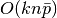, 其中 k 是迭代次数，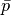 是每个样本中非零属性的平均数量。
然而，最近的理论研究表明获得理想精度所花费的计算时间并不会随着训练集的规模的增加而增加。
1.5.5. 应用实践指南¶
随机梯度下降算法对特征尺度比较敏感，所以我们高度建议你调整数据的坐标尺度。 比如，将输入向量X中的每个属性的取值范围调整到[0,1]或[-1,+1];亦或归一化为零均值，方差为1。 需要特别注意的是，你必须将相同的归一化操作应用在测试数据集上以获得有意义的结果。 这可以通过使用
StandardScaler轻松的做到:from sklearn.preprocessing import StandardScaler scaler = StandardScaler() scaler.fit(X_train) # Don't cheat - fit only on training data X_train = scaler.transform(X_train) X_test = scaler.transform(X_test) # apply same transformation to test data如果你的属性有一个内在的尺度（比如说单词频率或指示器特征），那么就不再需要 重新调整属性的坐标尺度了。
寻找合理的正则化参数
is 的最佳做法是使用网格搜索交叉验证
GridSearchCV, 通常情况下，其取值范围在10.0**-np.arange(1,7)。Empirically, we found that SGD converges after observing approx. 10^6 training samples. Thus, a reasonable first guess for the number of iterations is
n_iter = np.ceil(10**6 / n), wherenis the size of the training set.If you apply SGD to features extracted using PCA we found that it is often wise to scale the feature values by some constant c such that the average L2 norm of the training data equals one.
We found that Averaged SGD works best with a larger number of features and a higher eta0
参考文献:
- “Efficient BackProp” Y. LeCun, L. Bottou, G. Orr, K. Müller - In Neural Networks: Tricks of the Trade 1998.
1.5.6. 数学形式¶
给定训练样本集合 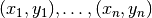 ，
其中，
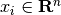 和
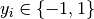,
我们的目标是去学习一个线性得分函数
 ，该函数的模型参数是
，该函数的模型参数是
 和截距
和截距  .
为了进行预测，我们只需要查看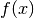的正负号
就可以了。
一个通用的寻找模型参数的方法是通过最小化带有正则化项的训练误差，由下式给出：
.
为了进行预测，我们只需要查看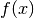的正负号
就可以了。
一个通用的寻找模型参数的方法是通过最小化带有正则化项的训练误差，由下式给出：
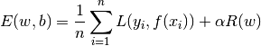
其中，  是一个用于测量模型拟合误差的损失函数，而
是一个用于测量模型拟合误差的损失函数，而
 是一个正则化项用于对模型的复杂性添加惩罚；
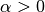是一个非负超参数。
是一个正则化项用于对模型的复杂性添加惩罚；
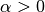是一个非负超参数。
的不同选择会产生不同的分类器：
- Hinge: (soft-margin) 支持向量分类器(SVM).
- Log: Logistic 回归.
- Least-Squares:岭回归.
- Epsilon-Insensitive: (soft-margin)支持向量回归器(SVR).
所有上述损失函数都可以被认为是在分类误差(0-1损失)上的上界，如下所示：
正则化项 有如下几种可选方案:
- L2 norm:
,
- L1 norm:
, 将会带来稀疏解。
- Elastic Net:
, L2和L1的凸组合, 其中
由
1 - l1_ratio给出。
下图展示了当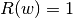 时，在参数空间中的不同的正则化项的边界。

1.5.6.1. SGD¶
随机梯度下降是用于解决无约束优化问题的优化方法。与批量梯度下降法相对比，SGD通过每次只考虑单个训练样本的 方式来逼近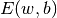 的真实梯度值。
SGDClassifier 实现了一个一阶的SGD学习过程。
算法在训练样本上迭代并且对每一个样本依据以下的更新规则更新模型参数：

其中， 是学习率参数，用于控制算法在参数空间的搜索步长。截距
是学习率参数，用于控制算法在参数空间的搜索步长。截距  也以同样的方法被更新但是没有正则化项。
也以同样的方法被更新但是没有正则化项。
学习率
可以设为常量也可以设为一个逐渐减小的量。 默认的学习率调度方法如下所示：
(learning_rate='optimal')

其中  是时间步(总共有时间步：n_samples * n_iter
个),
是时间步(总共有时间步：n_samples * n_iter
个),  由一个启发式方法来确定：
such that the expected initial updates are comparable with the expected
size of the weights (this assuming that the norm of the training samples is
approx. 1). 它的精确定义可以在这儿找到：
由一个启发式方法来确定：
such that the expected initial updates are comparable with the expected
size of the weights (this assuming that the norm of the training samples is
approx. 1). 它的精确定义可以在这儿找到：_init_t
在BaseSGD.
对于回归问题，默认的学习率调度方法是 inverse scaling
(learning_rate='invscaling'), 由下式给出：
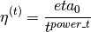
其中， 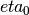 和
 是超参数通过使用
是超参数通过使用 eta0 和 power_t 来分别确定。
对于一个固定的学习率，使用learning_rate='constant'
和eta0来指定学习率。
模型参数可以通过成员变量
coef_ 和
intercept_获得:
- 成员变量
coef_存放权重信息- 成员变量
intercept_存放

参考文献:
- “Solving large scale linear prediction problems using stochastic gradient descent algorithms” T. Zhang - In Proceedings of ICML ‘04.
- “Regularization and variable selection via the elastic net” H. Zou, T. Hastie - Journal of the Royal Statistical Society Series B, 67 (2), 301-320.
- “Towards Optimal One Pass Large Scale Learning with Averaged Stochastic Gradient Descent” Xu, Wei
1.5.7. 实现细节¶
The implementation of SGD is influenced by the Stochastic Gradient SVM of Léon Bottou. Similar to SvmSGD, the weight vector is represented as the product of a scalar and a vector which allows an efficient weight update in the case of L2 regularization. In the case of sparse feature vectors, the intercept is updated with a smaller learning rate (multiplied by 0.01) to account for the fact that it is updated more frequently. Training examples are picked up sequentially and the learning rate is lowered after each observed example. We adopted the learning rate schedule from Shalev-Shwartz et al. 2007. For multi-class classification, a “one versus all” approach is used. We use the truncated gradient algorithm proposed by Tsuruoka et al. 2009 for L1 regularization (and the Elastic Net). The code is written in Cython.
参考文献:
- “Stochastic Gradient Descent” L. Bottou - Website, 2010.
- “The Tradeoffs of Large Scale Machine Learning” L. Bottou - Website, 2011.
- “Pegasos: Primal estimated sub-gradient solver for svm” S. Shalev-Shwartz, Y. Singer, N. Srebro - In Proceedings of ICML ‘07.
- “Stochastic gradient descent training for l1-regularized log-linear models with cumulative penalty” Y. Tsuruoka, J. Tsujii, S. Ananiadou - In Proceedings of the AFNLP/ACL ‘09.